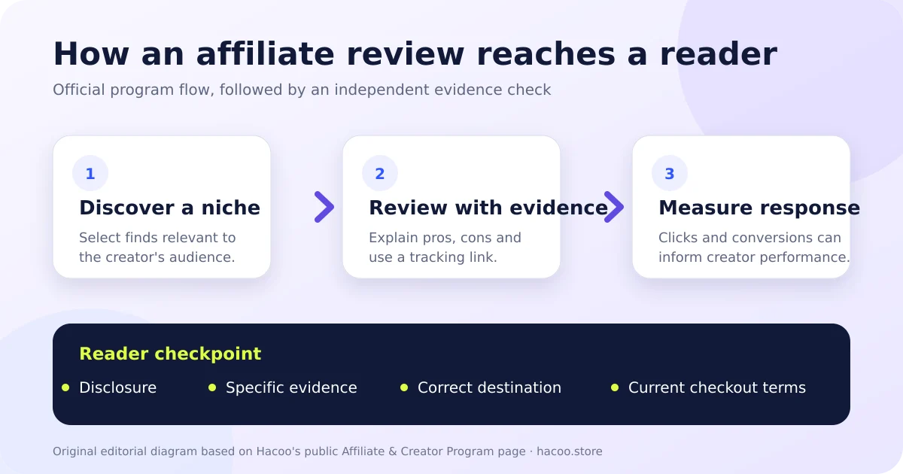

What is the Hacoo affiliate program?
Hacoo describes its official offer as an “Affiliate & Creator Program.” The public program page is aimed at influencers, lifestyle and beauty creators, content sites, bloggers and community leaders. Its stated model is straightforward: creators discover items or ideas that match their niche, publish an authentic review with a tracking link, and use performance information to understand the response. Hacoo presents that activity as a way for creators to earn from recommendations. See the official Hacoo Affiliate & Creator Program.
That description confirms that tracking and monetization exist. It does not make every Hacoo-related social link an official affiliate link, and it does not prove that every creator was accepted by Hacoo. The safe starting point is the official Hacoo program page, whose application button currently leads to the Hacoo affiliate sign-in and application portal. A form, invitation or payment request on an unrelated lookalike domain should not be treated as official merely because it uses the Hacoo name.

The three public stages—and what each one means
1. Join and choose a niche
Hacoo tells prospective creators to explore discoveries and identify the lifestyle trends that fit their audience. In practice, a niche should be more specific than “shopping.” A creator could focus on footwear sizing, capsule wardrobes, travel accessories or budget organization. A clear niche gives a review context: the reader knows which problem the item is supposed to solve and can judge whether the creator has relevant experience.
2. Publish an honest review with a tracking link
The official page asks creators to include pros and cons and says participants can use an exclusive tracking link. This is the most important stage for a reader. The review contains the claim; the link creates a possible commercial incentive. Neither fact automatically invalidates the other. A useful review still needs specific evidence: the exact item or variant, how it was used, the date of the experience, fit or material observations, and a limitation that helps the wrong buyer opt out.
Hacoo's Trust Center similarly emphasizes feedback that reveals flaws and real-world use. It says the platform uses community reporting, automated systems and manual review to address deceptive, fake or stolen content. Those controls are relevant, but they do not convert every creator statement into a guarantee. Hacoo's current terms say content and recommendations come from independent users and creators and may be inaccurate or outdated. Compare the Hacoo Trust Center with the Terms of Service.
3. Measure performance and receive rewards
Hacoo says its creator tools can show clicks, conversions and revenue associated with reviews. This means creators may learn which topics or recommendations produce action. That feedback can improve useful content, but it can also reward aggressive promotion if the creator focuses only on conversions. Hacoo addresses that tension by telling creators to provide genuine recommendations and by prohibiting fake reviews, exaggerated claims, intellectual-property violations and illegal content.
The public marketing page uses broad language about commissions, but it does not display an exact universal commission percentage, attribution window, payment threshold, payout schedule or country-by-country eligibility table in the page content reviewed for this article on July 16, 2026. Those details should not be guessed. A prospective creator should read the current account-level agreement presented during application and keep a copy of the terms accepted.
What a reader should check before clicking
Look for a commercial disclosure
A clear disclosure tells the reader that the creator may receive value from the link. It should be visible near the recommendation, not hidden behind vague wording or placed only on a separate profile page. Disclosure alone does not prove a review is accurate; it simply makes the incentive easier to evaluate.
Separate evidence from enthusiasm
“You need this” is promotion. Measurements, dated photos of the exact variant, a description of how the item behaved, and a meaningful drawback are evidence. If a creator mentions a discount, delivery time, return condition or product feature, open the live destination and verify it there. Do not apply a claim from one country, date or product version to every checkout. Our Hacoo review verification guide provides a more detailed evidence checklist.
Inspect the destination, not just the anchor text
A button labelled “shop,” “find” or “view” can lead to Hacoo, an affiliate redirect or a separate third-party site. Hacoo's terms say third-party sites have their own privacy and data practices. Its Privacy Policy also warns that third-party services are governed by their own policies. Before entering an account, address or payment information, check the final domain, the company handling checkout, and its current support, delivery and return terms.
A due-diligence list for prospective creators
The public Hacoo page is an introduction, not a complete financial or legal agreement. Before building content around the program, a creator should confirm the operational details inside the official application process:
- Eligibility: supported countries, account requirements, age limits and any approval criteria.
- Attribution: what action is tracked, how long attribution lasts and how returns or cancellations affect credit.
- Compensation: the actual rate, payment currency, threshold, schedule, tax documentation and available payout methods.
- Content rules: required disclosures, prohibited claims, restricted products, brand-use limits and intellectual-property obligations.
- Evidence: which reports show clicks, conversions, adjustments and completed payments.
- Termination: what happens to pending earnings, links and stored data if an account is suspended or closed.
Do not publish a universal answer if the portal presents terms that depend on account, campaign or region. Save the dated version of the agreement and verify material changes before repeating an old commission or payout claim. The English version of Hacoo's public Terms of Service says it prevails if a translation conflicts, so creators relying on translated summaries should also review the current English text.
How to write a useful affiliate review
A good affiliate review should remain useful even if the tracking link is removed. Start with the reader's decision rather than the product pitch. State the exact variant and use case, explain what was directly observed, identify who may not benefit, and distinguish product facts from personal judgment. If information comes from Hacoo rather than first-hand use, label it as an official claim and link to the source.
Avoid unsupported urgency, fixed delivery promises, authenticity guarantees, invented scarcity, and claims that one result applies everywhere. Keep screenshots free of addresses, order numbers, payment data and private messages. When a policy may change, include the review date and tell the reader to verify the live page. This approach aligns more closely with Hacoo's stated preference for reviews that include practical flaws rather than manufactured perfection.
Common questions, answered cautiously
Does Hacoo have an official affiliate program?
Yes. Hacoo publishes an official Affiliate & Creator Program page and links it to an application portal on the affiliate.hacoo.app subdomain. That confirms the program's existence, not any individual creator's membership.
Does an affiliate link change the product price?
The public program page reviewed for this guide does not establish a universal answer. The live checkout destination controls the current displayed price, currency, fees and promotion. Compare the final amount rather than assuming a tracking link is cheaper or more expensive.
Can I publish an exact Hacoo commission rate?
Only if the rate is shown in the current official terms available to the relevant account or campaign. The public marketing page does not provide one exact percentage that this guide can safely apply to every creator.
Is a tracked link automatically trustworthy?
No. A tracking link is a measurement mechanism. Readers should still check the disclosure, review evidence, redirect chain, final domain and current checkout terms. Suspicious promotion or malicious links can be reported through Hacoo's official in-app tools described by its Trust Center.
The practical conclusion
The Hacoo affiliate program gives creators a documented path from discovery to review, tracking and reward. For creators, the unresolved work is to confirm the account-level commercial terms and publish evidence-based content. For readers, the unresolved work is to recognize the incentive without dismissing useful evidence—or accepting promotion as proof. Check the disclosure, the observation, the destination and the live terms in that order. Then continue with the site's independent Hacoo shopping checklist before acting on any product route.